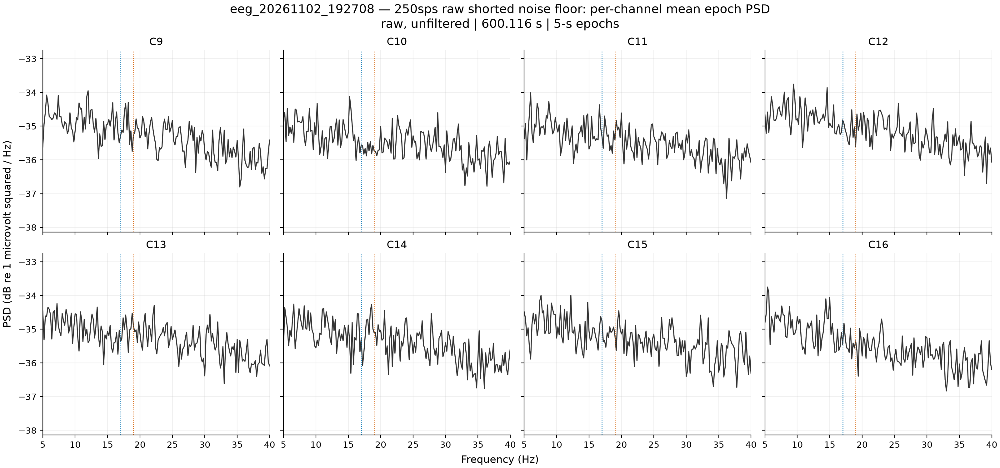
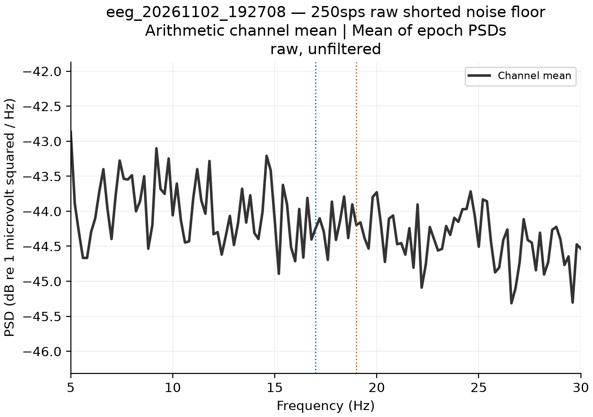
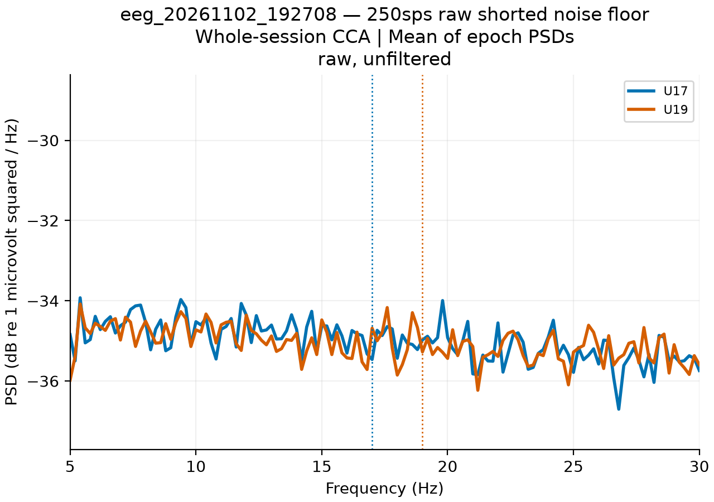
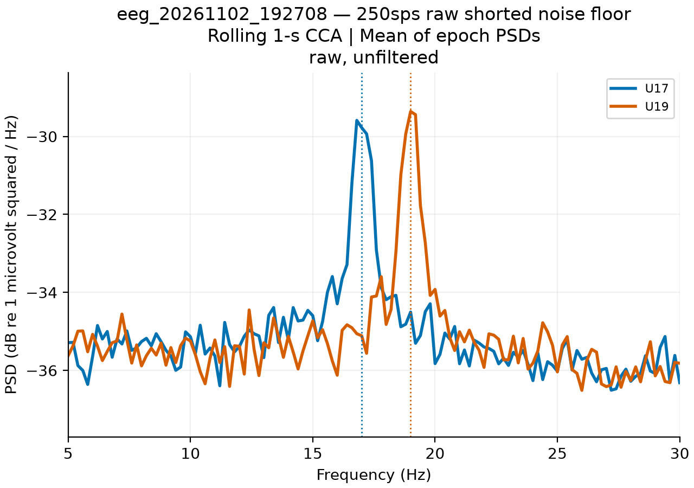
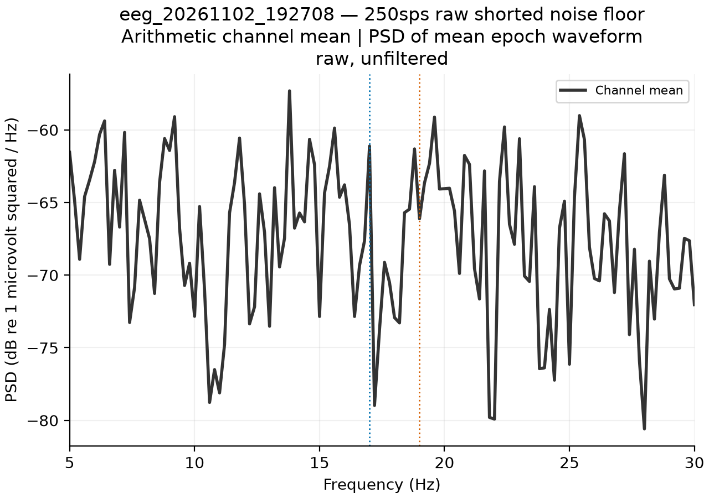
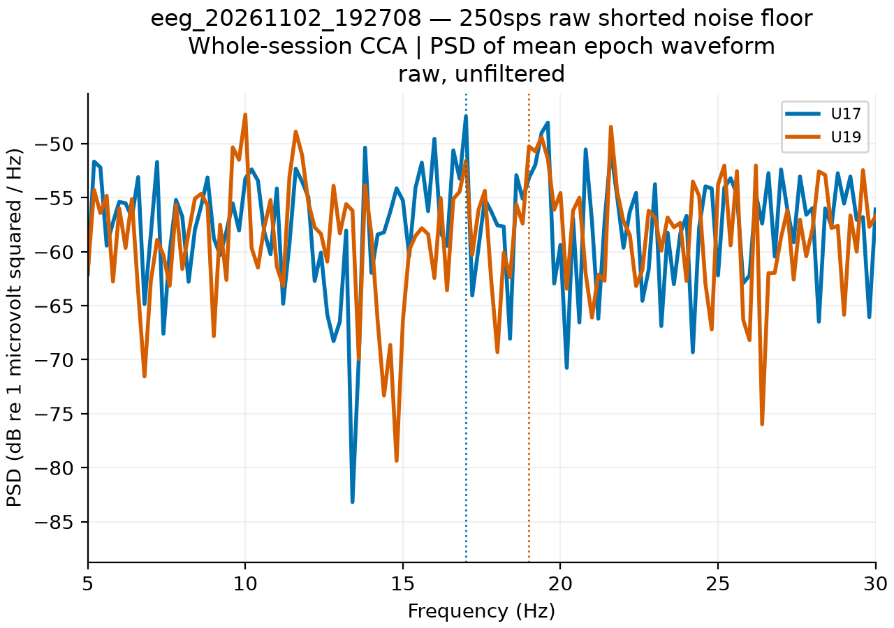
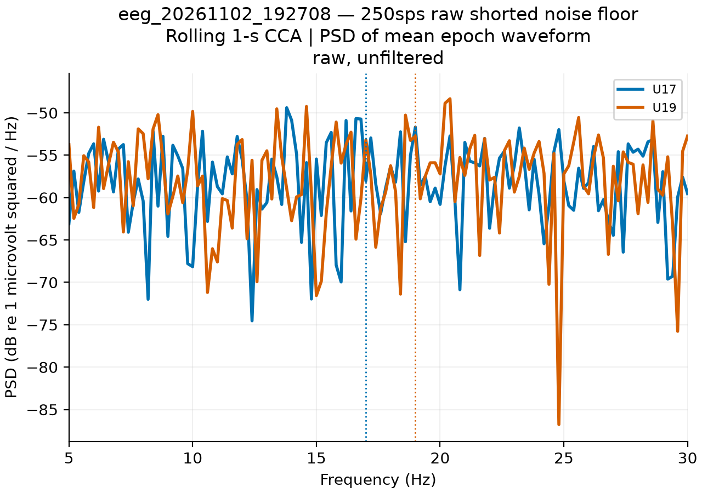

One continuous raw shorted noise-floor session analysed. Five-second epochs, DPSS NW=1/K=1. No game/condition labels; 17/19 Hz are inherited analysis targets. This session contains raw ADC counts scaled to microvolts, with no offline filter. Rolling CCA is an offline reconstruction with explicit boundary fits. All samples retained.
| session | label | source | samples | observed_seconds | logged_cca_updates |
|---|---|---|---|---|---|
| eeg_20261102_192708 | 250sps raw shorted noise floor | raw, unfiltered | 150029 | 600.116 | 0 |

raw, unfiltered. All samples retained. 120 complete + 1 partial epochs. Mean epoch PSD in linear power, each channel separately. DPSS NW=1/K=1; 0.2 Hz FFT grid. Dotted blue/orange: 17/19 Hz analysis targets.
SVG| Channel mean | Whole-session CCA | Rolling CCA |
|---|---|---|
 raw, unfiltered; channels: C9, C10, C11, C12, C13, C14, C15, C16. Mean of selected channels before epoching. PSD per epoch, then equal epoch mean in linear power. 120 complete + 1 partial 5-s epochs; 150029 samples, all retained. DPSS NW=1/K=1; 0.2 Hz FFT grid. 17/19 Hz are inherited targets, not verified stimuli. SVG |  raw, unfiltered; channels: C9, C10, C11, C12, C13, C14, C15, C16. Independent target weights fitted once using the whole session. PSD per epoch, then equal epoch mean in linear power. 120 complete + 1 partial 5-s epochs; 150029 samples, all retained. DPSS NW=1/K=1; 0.2 Hz FFT grid. 17/19 Hz are inherited targets, not verified stimuli. SVG |  raw, unfiltered; channels: C9, C10, C11, C12, C13, C14, C15, C16. Latest 1-s windows; offline 100 ms schedule (no logged CCA stream). First window back-projected; offline analysis. PSD per epoch, then equal epoch mean in linear power. 120 complete + 1 partial 5-s epochs; 150029 samples, all retained. DPSS NW=1/K=1; 0.2 Hz FFT grid. 17/19 Hz are inherited targets, not verified stimuli. SVG |
 raw, unfiltered; channels: C9, C10, C11, C12, C13, C14, C15, C16. Mean of selected channels before epoching. NaN-aware mean epoch waveform, then PSD. No event alignment. 120 complete + 1 partial 5-s epochs; 150029 samples, all retained. DPSS NW=1/K=1; 0.2 Hz FFT grid. 17/19 Hz are inherited targets, not verified stimuli. SVG |  raw, unfiltered; channels: C9, C10, C11, C12, C13, C14, C15, C16. Independent target weights fitted once using the whole session. NaN-aware mean epoch waveform, then PSD. No event alignment. 120 complete + 1 partial 5-s epochs; 150029 samples, all retained. DPSS NW=1/K=1; 0.2 Hz FFT grid. 17/19 Hz are inherited targets, not verified stimuli. SVG |  raw, unfiltered; channels: C9, C10, C11, C12, C13, C14, C15, C16. Latest 1-s windows; offline 100 ms schedule (no logged CCA stream). First window back-projected; offline analysis. NaN-aware mean epoch waveform, then PSD. No event alignment. 120 complete + 1 partial 5-s epochs; 150029 samples, all retained. DPSS NW=1/K=1; 0.2 Hz FFT grid. 17/19 Hz are inherited targets, not verified stimuli. SVG |